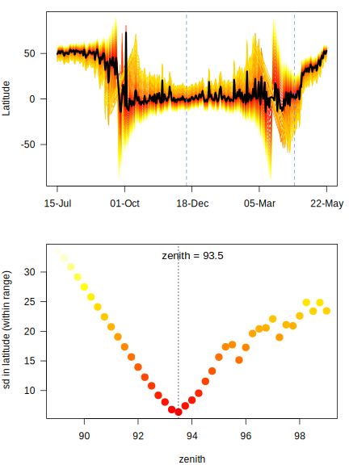

7.2 Alternative - Hill-Ekstrom Calibration
For the bee eaters and many other species the breeding season that is often also were the loggers are delpoyed is a very speciel period during which the birds use different habitats and show different behaviors. This is of course suboptimal for calibration since it would lead to good estimates for the breeding grounds when we knwo the exact location and biased estimates for the rest of the year. We can therefore try and estimate an alternative zenith angle based in the Hill-Ekstrom theory that the rigth zenith anlge should lead to the lowest variance in latitude estimates during stationary periods. And the latter is most pronounced around the equinox. The following bits of code draws a basic path and then compares different zeniths to find the one with the lowest variation. It then uses that new zenith with the least sd in the threshold model.
In the findHEZenithfunction, the tol argument defines how many locations shoudl be linearly interpolated around the equinox. Large values lead to larger periods with interpolated values. For this type of calibration it makes sense to play with this value but in general it is recommended to set it to a low value (e.g. 0.08). If the tracked individual has been stationary during the time of the equinox this period provides the best data for the Hill-Ekstrom calibration.
(zenith_sd <- findHEZenith(twl, tol=0.01, range=c(300,550)))
## [1] 93.5The top panel shows the entire path (latitude) using different zenith angles with the black line indicating the latiude estimates with the smalles variation within the specified range (in between the two blue dashed lines). One need to be quite sure that the individual did not move during this period. The lower panes shows the actual variation for each across a range of zenith angles. It is good if one can see a clear minimum in this curve.
In this case, there is no real diffrence between the two calibrations. If a difference will be detected (>0.5 degrees), one should consider to adjust the zenith angles calculated from the breeding site.
zenith <- zenith + abs(zenith0-zenith_sd)
zenith0 <- zenith_sd